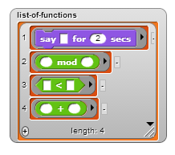
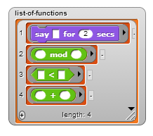
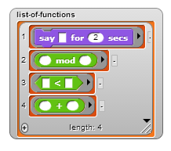

 say them
and report them

Have you ever wondered why the blocks map, keep, and combine are called "higher-order functions" (HOFs)?
The reason we use this term is that these "higher-order functions" take functions (blocks) as inputs. They are "higher-order" because they
are functions that themselves operate on functions!
What else can we pass into functions? Strings, lists, and numbers are a few examples. What are these things? They are types of data. Since we can also pass functions into other functions, aren't they just like any other kind of data? In fact, they are!
If functions are really just a kind of data, what can we do with them? Well, what can we do with other types of data? We can assign them to variables, add them to lists, say them, and report them from reporter blocks. We can do all of these things with functions, too!
Take a look at the "HOFs" sprite in your starter file. The first thing you should see is
Here, we are setting a variable to a function (in this case, the plus block). Notice anything special?
The plus block is inside a gray ring. You may recogize this from map, keep, and
combine. This gray border tells Snap that the block inside should not be evaluated,
but stored as the block itself. If we didn't have the gray border, the variable would just be set to 0. The gray border can be
found in the green operators tab. Notice that there's one for each type of block: command, reporter, and predicate.
Looking at the scripts for this sprite, you should also see how we can add functions to a list

say them
and report them